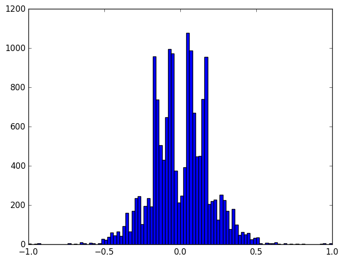
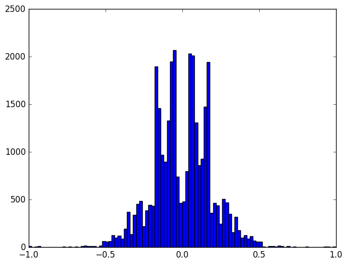

Robot Car

Introduction
In this document we report the results of a project for the Udacity Self-Driving Car Engineer Nanodegree program's first semester. The objective of the project is to build and train a model capable of driving a simulated car.
The method is quite simple. We somehow acquire training data—perhaps by recording it ourselves—in a computerized driving simulator. The training data comprise images of the road as seen from cameras mounted on the simulated car, along with corresponding control inputs (in this case, just the steering angle). The training data are used to train a Deep Learning neural network model so that it recognizes road/car configurations and generates the appropriate steering angle. The model is then used to generate inputs (steering angles) in real-time for the simulation, unpiloted by a human driver.
Here is a brief enumeration of the elements of my project laboratory.
- Keras - Deep Learning toolkit for Python
- TensorFlow - High-Performance numerical computation library for Python and backend for Keras.
- Unix command-line tools - handy for data pre-processing
- Emacs - indispensable coding and writing environment
- Org mode - indispensable writing and publishing environment for Emacs
- Lenovo IdeaPad U310 - somewhat ancient laptop
- The Mechanic's Institute Library - a calm oasis in downtown San Francisco (shown below)

Figure 2: Project Lab
While tools like Keras and TensorFlow (really, TensorFlow) are tailor-made for modern high-performance parallel numerical computation using GPUs, environments that are easily-obtained with cloud-computing environments like Amazon AWS, everything in this experiment was conducted just on this one laptop. While better hardware would be almost certainly be essential for real Deep Learning applications and autonomous vehicles, in this toy problem it wasn't really necessary.
Also, note that everything in this project was done in this document's corresponding README.org Org-Mode file in Emacs. This file does not merely document the code. This document is the code. Like Jupyter notebooks, it is an example of literate programming, and the model.py file is generated from this document.
Methods
Data
Collection and Preparation
Behavioral cloning relies on training neural networks with data exhibiting the very behavior you wish to clone. One way to achieve that for this project is to use a driving simulator provided by Udacity, which in its "training mode" can emit a stream of data samples as the user operates the car. Each sample consists of a triplet of images and a single floating point number in the interval [-1, 1], recording the view and the steering angle for the simulation and car at regular intervals. The three images are meant to be from three "cameras" mounted on the simulated car's left, center, and right, giving three different aspects of the scene and in principle providing stereoscopic depth information.
The driving simulator also has an "autonomous mode" in which the car interacts with a network server to exchange telemetry that guides the car. The simulator sends the network server camera images and the network server is expected to reply with steering angles. So, not only is the driving simulator critical for understanding the problem and helpful for obtaining training data, it is absolutely essential for evaluating the solution.
Actually, Udacity provides not one but two simulators. The
first is the stock simulator and the second is an enhanced
simulator, whose ability to use a computer mouse as input is
very important for acquiring good training data with smoothly
varying steering angles. So, why not get both? Here, we
download and unzip the Linux versions into sub-directories
simulator-linux and simulator-beta.
wget -O simulator-linux.zip "https://d17h27t6h515a5.cloudfront.net/topher/2016/November/5831f0f7_simulator-linux/simulator-linux.zip" wget -O simulator-beta.zip "https://d17h27t6h515a5.cloudfront.net/topher/2017/January/587527cb_udacity-sdc-udacity-self-driving-car-simulator-dominique-development-linux-desktop-64-bit-5/udacity-sdc-udacity-self-driving-car-simulator-dominique-development-linux-desktop-64-bit-5.zip" unzip -d simulator-linux -u simulator-linux.zip > /dev/null 2>&1 unzip -d simulator-beta -u simulator-beta.zip > /dev/null 2>&1
While we are at it, we might as well get the network server as well, which is implemented in the drive.py Python file.
wget https://d17h27t6h515a5.cloudfront.net/topher/2017/January/586c4a66_drive/drive.py
Now, while we are encouraged to collect our own training data,
it turns out that Udacity supplies their own training data for
the first of the two tracks, which is the track on which the
solution will be validated. We might as well get that as well,
and see how much progress we can make just with the provided
samples. The data are in a zip file, data.zip, which we of
course unzip, taking care to remove the annoying __MACOSX
directory.
wget -nc "https://d17h27t6h515a5.cloudfront.net/topher/2016/December/584f6edd_data/data.zip"
unzip data.zip > /dev/null 2>&1
rm -rf __MACOSX
The data—whether recorded or downloaded—are presented as a
CSV "index file", driving_log.csv. Each line in this file
correlates images with the steering angle, throttle, brake, and
speed of the car. The images are related via filenames in the
first three fields, which refer to the center, left, and right
camera images stored in files in the IMG subdirectory. We can
take a look at the beginning of that file and then determine how
many samples are provided.
head data/driving_log.csv wc -l data/driving_log.csv
center,left,right,steering,throttle,brake,speed IMG/center_2016_12_01_13_30_48_287.jpg, IMG/left_2016_12_01_13_30_48_287.jpg, IMG/right_2016_12_01_13_30_48_287.jpg, 0, 0, 0, 22.14829 IMG/center_2016_12_01_13_30_48_404.jpg, IMG/left_2016_12_01_13_30_48_404.jpg, IMG/right_2016_12_01_13_30_48_404.jpg, 0, 0, 0, 21.87963 IMG/center_2016_12_01_13_31_12_937.jpg, IMG/left_2016_12_01_13_31_12_937.jpg, IMG/right_2016_12_01_13_31_12_937.jpg, 0, 0, 0, 1.453011 IMG/center_2016_12_01_13_31_13_037.jpg, IMG/left_2016_12_01_13_31_13_037.jpg, IMG/right_2016_12_01_13_31_13_037.jpg, 0, 0, 0, 1.438419 IMG/center_2016_12_01_13_31_13_177.jpg, IMG/left_2016_12_01_13_31_13_177.jpg, IMG/right_2016_12_01_13_31_13_177.jpg, 0, 0, 0, 1.418236 IMG/center_2016_12_01_13_31_13_279.jpg, IMG/left_2016_12_01_13_31_13_279.jpg, IMG/right_2016_12_01_13_31_13_279.jpg, 0, 0, 0, 1.403993 IMG/center_2016_12_01_13_31_13_381.jpg, IMG/left_2016_12_01_13_31_13_381.jpg, IMG/right_2016_12_01_13_31_13_381.jpg, 0, 0, 0, 1.389892 IMG/center_2016_12_01_13_31_13_482.jpg, IMG/left_2016_12_01_13_31_13_482.jpg, IMG/right_2016_12_01_13_31_13_482.jpg, 0, 0, 0, 1.375934 IMG/center_2016_12_01_13_31_13_584.jpg, IMG/left_2016_12_01_13_31_13_584.jpg, IMG/right_2016_12_01_13_31_13_584.jpg, 0, 0, 0, 1.362115 8037 data/driving_log.csv
We have 8037 lines, but descriptive labels are provided in the first line of this file. We strip that line out. Also, Deep Learning lore says that it is often prudent to randomize the data when possible and always prudent to split the data into training and validation sets. Here we do all three in just a few lines of shell code, taking 1000 samples (about 12%) as validation data.
cat data/driving_log.csv | tail -n+2 | shuf > data/driving_log_all.csv cat data/driving_log_all.csv | head -n1000 > data/driving_log_validation.csv cat data/driving_log_all.csv | tail -n+1001 > data/driving_log_train.csv
As a sanity check, we report the number of total samples,
training samples, and validation samples. Even if the provided
Udacity data are insufficient ultimately for delivering a
solution, they are valuable for establishing a baseline for
developing that solution. A project like this has many free
parameters and the combinatorial explosion among them can
quickly overwhelm the researcher, and so eliminating some of
those free parameters by avoiding recording one's own data—if
only in the interim—is a real boon. We do not use the
driving_log_all.csv file after this point; it served as a
handy placeholder of the original data, shuffled and with the
header removed. However, the driving_log_train.csv and
driving_log_validation.csv files play a central role as we
iteratively develop and refine the model.
wc -l data/driving_log_all.csv wc -l data/driving_log_train.csv wc -l data/driving_log_validation.csv
8036 data/driving_log_all.csv 7036 data/driving_log_train.csv 1000 data/driving_log_validation.csv
Before leaving the land of shell commands for the land of Python scripts and neural nets, we create one other useful data file. Paul Heraty argues that it can be useful in the early stages of developing a solution to "overtrain" it on a small sample comprising disparate canonical examples. As we shall see, we can confirm that this was extremely good advice.
One of the chief difficulties we encountered as a newcomer to Deep Learning and its community of tools was simply "getting it to work in the first place," independent of whether the model actually was very good. One of the chief strategies for overcoming this difficulty we found is to "try to get a pulse:" develop the basic machinery of the model and solution first, with little or no regard for its fidelity. Working through the inevitable blizzard of error messages one first encounters is no small task. Once it is cleared and the practitioner has confidence his tools are working well, then it becomes possible to rapidly iterate and converge to a good solution.
Creating an "overtraining sample" is good because overtraining is a vivid expectation that can quickly be realized (especially with only 3 samples), and if overtraining does not occur you know you have deeper problems.
With a little magic from Bash, Awk, etc., we can select three disparate samples, with neutral steering, extreme left steering, and extreme right steering.
cat <(cat data/driving_log_all.csv | sort -k4 -n -t, | head -n1) <(cat data/driving_log_all.csv | sort -k4 -nr -t, | head -n1) <(cat data/driving_log_all.csv | awk -F, -vOFS=, '{print $1, $2, $3, sqrt($4*$4), $5, $6, $7}' | sort -k4 -n -t, | head -n1) > data/driving_log_overtrain.csv
cat data/driving_log_overtrain.csv
IMG/center_2016_12_01_13_39_28_024.jpg, IMG/left_2016_12_01_13_39_28_024.jpg, IMG/right_2016_12_01_13_39_28_024.jpg, -0.9426954, 0, 0, 28.11522 IMG/center_2016_12_01_13_38_46_752.jpg, IMG/left_2016_12_01_13_38_46_752.jpg, IMG/right_2016_12_01_13_38_46_752.jpg, 1, 0, 0, 13.2427 IMG/center_2016_12_01_13_30_48_287.jpg, IMG/left_2016_12_01_13_30_48_287.jpg, IMG/right_2016_12_01_13_30_48_287.jpg,0, 0, 0, 22.14829
We will be able to see exactly what the images for these samples once we set up a suitable Python environment, which we do in the next section.
Setup
Udacity helpfully provides a CarND Starter Kit in the contents of a particular GitHub repository. The instructions there lead one to create a Conda environment for Python. We did that and extracted its definition into the environment.yml file. That way, if the environment does not already exist it can be created and activated with these commands.
conda env create --file environment.yml --name CarND-Behavioral-Cloning
source activate CarND-Behavioral-Cloning
Having set up the Conda environment, and activated it, now we can finally load the Python modules that we will need in later sections.
from PIL import Image from itertools import groupby, islice, zip_longest, cycle, filterfalse from keras.layers import Conv2D, Flatten, MaxPooling2D, Dense, Dropout, Lambda, AveragePooling2D from keras.layers.convolutional import Cropping2D, Convolution2D from keras.models import Sequential, model_from_json from keras.utils.visualize_util import plot from scipy.stats import kurtosis, skew, describe import matplotlib.pyplot as plt import numpy as np import pprint as pp import random
Utilities
Another piece of advice impressed upon students in the class, to
the point of it practically being a requirement, was to learn to
use Python generators and the fit_generator function in our
Deep Learning toolkit, Keras. Generators allow for a form of
lazy loading, which can be useful in Machine Learning settings
where large data sets that do not fit into main memory are the
norm. Keras makes use of that with fit_generator, which
expects input presented as generators that infinitely recycle
over the underlying data.
I took that advice to heart and spent considerable time—perhaps more than was necessary—learning about generators and generator expressions. It did pay off somewhat in that I developed a tiny library of reusable, composeable generator expressions, which are presented here.
Before doing that, though, first a detour and a bit of advice.
Anyone who is working with Python generators is urged to become
acquainted with itertools, a standard Python library of
reusable, composeable generators. For me the cycle generator
was a key find. As mentioned above, fit_generator needs
infinitely-recycling generators, which is exactly what
itertools.cycle provides. One wrinkle is that cycle
accomplishes this with an internal data cache, so if your data
do not fit in memory you may have to seek an alternative.
However, if your data do fit in memory this confers a very
nice property, for free: after cycling through the data the
first time all subsequent retrievals are from memory, so that
performance improves dramatically after the first cycle.
This turns out to be very beneficial and entirely appropriate for our problem. Suppose we use the Udacity data. In that case, we have 8136 images (training + validation) provided we use one camera only (such as the center camera). As we shall see below, each image is a 320x160 pixel array of RGB values, for a total of 150k per image. That means approximately 1 GB of RAM is required to store the Udacity data. My 4 year-old laptop has 4 times that. Now, this rosy picture might quickly dissolve if we use much more data, such as by using the other camera angles and/or acquiring more training data. Then again, it may not. With virtual memory, excess pages should be swapped out to disk. That's not ideal, but to first order it's not obvious that it's functionally much different from or much worse than recycling the data by repeatedly loading the raw image files. In fact, it may be better, since at least we only perform the actual translation from PNG format to NumPy data arrays once for each image.
If we are really concerned about memory usage we might consider
reducing the input image size, such as with OpenCV's
cv2.resize command, and we might consider cropping the image.
But, I think we should think carefully about this. These
operations may have an effect on the performance of the model,
and so manipulating the images in this way is not something we
should take lightly. Nevertheless, it can be beneficial as we
shall see shortly. However, if we do decide to crop and
resize, there is a technical trade-off to be made. Either we
can crop and resize as a pre-processing step, or we can do it
directly within the model, and there are advantages and
disadvantages to each. If we crop and resize as a
pre-processing step, it has direct impact on the aforementioned
memory considerations. But, we must take care to perform exactly the same crop and resize operations in the network server! Since cropping and resizing essentially introduce new
hyper-parameters, those parameters somehow must be communicated
to drive.py. If we crop and resize directly within the model,
it has no beneficial impact on the aforementioned memory
considerations. But, we get those operations and their internal hyper-parameters for free within the network server! I found
the latter advantage to be much greater and so the trade-off I
selected was to crop and resize within the model.
In any case, my experiments showed that for the Udacity data at
least, loading the data into an in-memory cache via
itertools.cycle (or, more precisely, my variation of it) and
then infinitely recycling over them proved to be a very good
solution.
However, there is one problem with itertools.cycle by itself,
and that is that again, according to Deep Learning lore, it is
prudent to randomize the data on every epoch. To do that, we
need to rewrite itertools.cycle so that it shuffles the data
upon every recycle. That is easily done, as shown below. Note
that the elements of the iterable are essentially returned in
batches, and that the first batch is not shuffled. If you want
only to return random elements then you must know the batch
size, which will be the number of elements in the underlying
finite iterable, and you must discard the first batch. The
itertools.islice function can be helpful here. In our case it
is not a problem since all of the data were already shuffled
once using Unix command-line utilities above.
def rcycle(iterable): saved = [] # In-memory cache for element in iterable: yield element saved.append(element) while saved: random.shuffle(saved) # Shuffle every batch for element in saved: yield element
If we invoke rcycle on a sequence drawn from the interval
[0,5), taken in 3 batches for a total of 15 values we can see
this behavior. The first 5 values are drawn in order, but then
the next 10 are drawn in two batches, each batch shuffled
independently. In practice, this is not a problem.
[x for x in islice(rcycle(range(5)), 15)]
[0, 1, 2, 3, 4, 1, 3, 4, 2, 0, 3, 1, 4, 0, 2]
The remaining utility functions that I wrote are quite straightforward and for brevity are written as "one-liners."
- feed
- generator that feeds lines from the file named by 'filename'
- split
- generator that splits lines into tuples based on a delimiter
- select
- generator that selects out elements from tuples
- load
- non-generator that reads an image file into a NumPy array
- Xflip
- non-generator that flips an input image horizontally
- yflip
- non-generator that flips a target label to its negative
- rmap
- generator that randomly applies or does not apply a function with equal probability
- rflip
- generator that flips samples 50% of the time
- fetch
- generator that loads index file entries into samples
- group
- generator that groups input elements into lists
- transpose
- generator that takes a generator of lists into a list of generators
- batch
- generator that takes a list of generators into a list of NumPy array "batches"
The actual code for these utility functions is presented below.
feed = lambda filename: (l for l in open(filename)) split = lambda lines, delimiter=",": (line.split(delimiter) for line in lines) select = lambda fields, indices: ([r[i] for i in indices] for r in fields) load = lambda f: np.asarray(Image.open(f)) Xflip = lambda x: x[:,::-1,:] yflip = lambda x: -x sflip = lambda s: (Xflip(s[0]), yflip(s[1])) rmap = lambda f,g: (x if random.choice([True, False]) else f(x) for x in g) rflip = lambda s: rmap(sflip, s) fetch = lambda records, base: ([load(base+f.strip()) for f in record[:1]]+[float(v) for v in record[1:]] for record in records) group = lambda items, n, fillvalue=None: zip_longest(*([iter(items)]*n), fillvalue=fillvalue) transpose = lambda tuples: (list(map(list, zip(*g))) for g in tuples) batch = lambda groups, indices=[0, 1]: ([np.asarray(t[i]) for i in indices] for t in groups)
Exploratory Analysis
It often pays to explore your data with relatively few constraints before diving in to build and train the actual model. One may gain insights that help guide you to better models and strategies, and avoid pitfalls and dead-ends.
To that end, first we just want to see what kind of input data
we are dealing with. We know that they are RGB images, so let's
load a few of them for display. Here, we show the three frames
taken from the driving_log_overtrain.csv file described
above—center camera only—labeled by their corresponding
steering angles. As you can see, the image with a large
negative angle seems to have the car on the extreme right edge
of the road. Perhaps the driver in this situation was executing
a "recovery" maneuver, turning sharply to the left to veer away
from the road's right edge and back to the centerline.
Likewise, with the next figure that has a large positive angle,
we see that the car appears to be on the extreme left edge of
the road. Perhaps the opposite recovery maneuver was in play.
Finally, in the third and last image that has a neutral steering
angle (0.0), the car appears to be sailing right down the middle
of the road, a circumstance that absent extraneous circumstances
(other cars, people, rodents) should not require corrective
steering.
X = [x for x in fetch(select(split(feed("data/driving_log_overtrain.csv")), [0,3]), "data/")] f = plt.figure() # start a figure plt.imshow(X[0][0]) # show the image f.suptitle("Angle: " + str(X[0][1])) # add figure title s = plt.savefig("road1.png", format="png", bbox_inches='tight') f = plt.figure() plt.imshow(X[1][0]) f.suptitle("Angle: " + str(X[1][1])) s = plt.savefig("road2.png", format="png", bbox_inches='tight') f = plt.figure() plt.imshow(X[2][0]) f.suptitle("Angle: " + str(X[2][1])) s = plt.savefig("road3.png", format="png", bbox_inches='tight')

Figure 3: Large Negative Steering Angle

Figure 4: Large Positive Steering Angle

Figure 5: Neutral Steering Angle
Next, we get the shape of an image which, as we said above, is
320x160x3. In NumPy parlance that's (160, 320, 3), for 160
rows (the y direction), 320 columns (the x direction), and 3
channels (the RGB colorspace).
print(X[0][0].shape) # X[0] is an (image,angle) sample. X[0][0] is just the image
(160, 320, 3)
We can see that the images naturally divide roughly into "road" below the horizon and "sky" above the horizon, with background scenery (trees, mountains, etc.) superimposed onto the sky. While the sky (really, the scenery) might contain useful navigational information, it is plausible that it contains little or no useful information for the simpler task of maintaining an autonomous vehicle near the centerline of a track, a subject we shall return to later. Likewise, it is almost certain that the small amount of car "hood" superimposed onto the bottom of the images contains no useful information. Therefore, let us see what the images would look like with the hood cropped out on the bottom by 20 pixels, and the sky cropped out on the top by 60 pixels, 80 pixels, and 100 pixels.
f = plt.figure() plt.imshow(X[0][0][60:140]) # sky:60 s = plt.savefig("road4.png", format="png", bbox_inches='tight') plt.imshow(X[0][0][80:140]) # sky:80 s = plt.savefig("road5.png", format="png", bbox_inches='tight') plt.imshow(X[0][0][100:140]) # sky:100 s = plt.savefig("road6.png", format="png", bbox_inches='tight')

Figure 6: Hood Crop: 20, Sky Crop: 60

Figure 7: Hood Crop: 20, Sky Crop: 80

Figure 8: Hood Crop: 20, Sky Crop: 100
I should pause here to address the issue of why we are only
using the center camera. After all, the training data do
provide two additional camera images: the left and right
cameras. Surely, those provide additional useful information
that the model potentially could make use of. However, in my
opinion there is a serious problem in using these data: the
simulator seems only to send to the network server in
drive.py the center image. I really do not understand why
this is the case, since obviously the simulator is fully-capable
of scribbling the extra camera outputs down when recording
training data.
Now, I have observed considerable discussion on the Slack channel for this course on the subject of using the additional camera images (left and right) along with a corresponding shift of the steering angles. Frankly, I am skeptical about the merit of this strategy and shall avoid this practice, evaluate the outcome, and adopt it only if absolutely necessary.
We begin by conducting a very simple analysis of the target labels, which again are steering angles in the interval [-1, 1]. In fact, as real-valued outputs it may be a stretch to call them "labels" and this is not really a classification problem. Nevertheless in the interest of time we will adopt the term.
f = plt.figure() y1 = np.array([float(s[0]) for s in select(split(feed("data/driving_log_all.csv")),[3])]) h = plt.hist(y1,bins=100) # plot histogram s = plt.savefig("hist1.png", format='png', bbox_inches='tight') print("") pp.pprint(describe(y1)._asdict()) # print descriptive statistics
>>>
OrderedDict([('nobs', 8036),
('minmax', (-0.94269539999999996, 1.0)),
('mean', 0.0040696440648332506),
('variance', 0.016599764281272529),
('skewness', -0.1302892457752191),
('kurtosis', 6.311554102057668)])

Figure 9: All Samples - No Reflection
The data have non-zero mean and skewness, perhaps arising from a bias toward left-hand turns when driving on a closed track.
The data are dominated by small steering angles because the car spends most of its time on the track in straightaways. The asymmetry in the data is more apparent if I mask out small angles and repeat the analysis. Steering angles occupy the interval [-1, 1], but the "straight" samples appear to be within the neighborhood [-0.01, 0.01].
We might consider masking out small angled samples from the actual training data as well, a subject we shall return to in the summary.
f = plt.figure() p = lambda x: abs(x)<0.01 y2 = np.array([s for s in filterfalse(p,y1)]) h = plt.hist(y2,bins=100) s = plt.savefig("hist2.png", format='png', bbox_inches='tight') print("") pp.pprint(describe(y2)._asdict())
>>> >>> >>>
OrderedDict([('nobs', 3584),
('minmax', (-0.94269539999999996, 1.0)),
('mean', 0.0091718659514508933),
('variance', 0.037178302717086116),
('skewness', -0.16657825969015194),
('kurtosis', 1.1768785967587378)])

Figure 10: abs(angle)>0.01 - No Reflection
A simple trick we can play to remove this asymmetry—if we wish—is to join the data with its reflection, effectively doubling our sample size in the process. For illustration purposes only, we shall again mask out small angle samples.
f = plt.figure() y3 = np.append(y2, -y2) h = plt.hist(y3,bins=100) s = plt.savefig("hist3.png", format='png', bbox_inches='tight') print("") pp.pprint(describe(y3)._asdict())
>>> >>>
OrderedDict([('nobs', 7168),
('minmax', (-1.0, 1.0)),
('mean', 0.0),
('variance', 0.03725725015081123),
('skewness', 0.0),
('kurtosis', 1.1400026599654964)])

Figure 11: abs(angle)>0.01 - Full Reflection
In one of the least-surprising outcomes of the year, after performing the reflection and joining operations, the data now are symmetrical, with mean and skewness identically 0.
Of course, in this analysis I have only reflected the target
labels. If I apply this strategy to the training data,
naturally I need to reflect along their horizontal axes the
corresponding input images as well. In fact, that is the
purpose of the Xflip, yflip, rmap, rflip, and sflip
utility functions described above.
It turns out there is another approach to dealing with the bias and asymmetry in the training data. In lieu of reflecting the data, which by definition imposes a 0 mean and 0 skewness, we can instead just randomly flip samples 50% of the time. While that will not yield a perfectly balanced and symmetric data distribution, given enough samples it should give us a crude approximation. Moreover, it saves us from having to store more images in memory, at the cost of some extra computation. Essentially, we are making the classic space-time trade-off between memory consumption and CPU usage.
y4 = [y for y in rmap(yflip, islice(cycle(y2), 2*y1.shape[0]))] # 2 batches y5 = [y for y in rmap(yflip, islice(cycle(y2), 4*y1.shape[0]))] # 4 batches y6 = [y for y in rmap(yflip, islice(cycle(y2), 8*y1.shape[0]))] # 8 batches f = plt.figure() h = plt.hist(y4,bins=100) s = plt.savefig("hist5.png", format='png', bbox_inches='tight') f = plt.figure() h = plt.hist(y5,bins=100) s = plt.savefig("hist6.png", format='png', bbox_inches='tight') f = plt.figure() h = plt.hist(y6,bins=100) s = plt.savefig("hist7.png", format='png', bbox_inches='tight') print("") pp.pprint(describe(y4)._asdict()) print("") pp.pprint(describe(y5)._asdict()) print("") pp.pprint(describe(y6)._asdict())
>>>
OrderedDict([('nobs', 16072),
('minmax', (-1.0, 1.0)),
('mean', -0.00052772518417122953),
('variance', 0.037283229390251714),
('skewness', 0.008520498589019836),
('kurtosis', 1.1769644267914074)])
OrderedDict([('nobs', 32144),
('minmax', (-1.0, 1.0)),
('mean', -0.0022488201157292191),
('variance', 0.037218482869856698),
('skewness', -0.050201681486988635),
('kurtosis', 1.1379036271452696)])
OrderedDict([('nobs', 64288),
('minmax', (-1.0, 1.0)),
('mean', -0.00011066913374191124),
('variance', 0.037250831344353398),
('skewness', -0.01390556638239454),
('kurtosis', 1.1406077506908527)])
Here, we see that as we increase the number of samples we draw from the underlying data set, while randomly flipping them, the mean tends to diminish. The skewness does not behave quite so well, though a coarser smoothing kernel (larger bin sizes for the histograms) may help. In any case, the following figures do suggest that randomly flipping the data and drawing larger sample sizes does help balance out the data.

Figure 12: abs(angle)>0.01 - Random Flipping, Recycle: 2

Figure 13: abs(angle)>0.01 - Random Flipping, Recycle: 4
Figure 14: abs(angle)>0.01 - Random Flipping, Recycle: 8
The sflip utility function defined above flips not only the
target labels—the steering angles—but also the images (as it
must). We check that by again displaying the 3 samples from
driving_log_overtrain.csv as above, but this time with each of
them flipped.
X2 = [sflip(x) for x in X] f = plt.figure() plt.imshow(X2[0][0]) f.suptitle("Angle: " + str(X2[0][1])) s = plt.savefig("road7.png", format="png", bbox_inches='tight') f = plt.figure() plt.imshow(X2[1][0]) f.suptitle("Angle: " + str(X2[1][1])) s = plt.savefig("road8.png", format="png", bbox_inches='tight') f = plt.figure() plt.imshow(X2[2][0]) f.suptitle("Angle: " + str(X2[2][1])) s = plt.savefig("road9.png", format="png", bbox_inches='tight')

Figure 15: Large Negative Steering Angle Flipped

Figure 16: Large Positive Steering Angle Flipped

Figure 17: Neutral Steering Angle Flipped
If we compare these 3 figures depicting the flipped samples from
the driving_log_overtrain.csv set, with the original unflipped
samples in the figures above we can confirm the expected
results. The images are indeed horizontally-reflected mirror
images, and the corresponding steering angles indeed have their
signs flipped (though, trivially for the neutral-steering
case).
After that grueling ordeal, and armed with these results, we now can develop a strategy for presenting training data to the model.
- Start with the Udacity data and see how far we can get.
- Split the data into training and validation files using command-line tools.
- Use
itertoolsand custom utilities, leaning heavily on generator expressions. - Take advantage of the small data sizes by keeping the original data in memory.
- But, perform a crude "augmentation" by randomly flipping the data horizontally (both images and steering angles) and recycling the base data.
- Consider cropping the data to reduce the input sizes, reduce memory usage, reduce the model size, and hopefully remove superfluous information.
- Use only the center-camera data and see how far we can get.
Implementation
There are many approaches to selecting or developing a model. The one I took was to assume that there is wisdom and experience already embedded in the Deep Learning models that already have been developed in the autonomous-vehicle community. I decided to choose one of those models as a starting point, and then build off of it or adapt it as needed. There are many to choose from, but two well-known and often-used ones are a model from comma.ai and a model from NVIDIA. I even considered adapting Yann LeCun's MNIST model for recognizing hand-written digits and even my own TensorFlow model for Traffic-Sign classification. In the end, I chose the NVIDIA model, since it is relatively simple, it is well-tested, and it reportedly produces good results.
In general, I observe several salient facts about the NVIDIA model.
- It consists of 9 layers, including a normalization layer, 5 convolutional layers, and 3 fully-connected layers.
- The input image is split into YUV planes.
- The normalization layer is non-trainable.
- The 5 convolutional layers have 3 with a 2x2 stride and 5x5 kernel and 2 non-strided with a 3x3 kernel.
- The convolutional layers increase in depth of filters while decreasing the image size.
- Following the convolutional layers is non-trainable flattening layer.
- The flattening layer feeds into the sequence of 3 fully-connected layers.
- The fully-connected layers decrease in hidden-units.
- The last fully-connected layer feeds into a single non-trainable node to produce real-valued output (steering angles).
- This being essentially a regression problem rather than a classification problem, the model does not terminate with a sigmoid activation function and/or softmax function and does not employ one-hot encoding.
- While presumably they use activation functions within their network, the NVIDIA researches do not seem to specify which activation function(s) they use.
- Likewise, they seem not to use pooling layers or dropout layers.
In addition to their model architecture the NVIDIA researchers also discuss augmentation and training.
- They augment their data by adding artificial shifts and rotations.
- They transform their training data to account for the human drivers' possible departure from what they call the "ground truth", which is the road's centerline.
- They train their model by minimizing the mean squared error ("mse") between the steering command output by the network and the command in the target data. These correspond to our steering angles.
Finally, I observe some aspects of the comma.ai model, by way of comparing and contrasting with the NVIDIA model.
- The model uses the ELU activation function in its layers.
- The model normalizes the data like the NVIDIA model does, but it is obvious that the data are normalized so that each of the RGB pixel values in [0,255] is scaled to real-valued numbers in [-1.0, 1.0].
- The comma.ai researchers use the ADAM optimizer, a nice general-purpose optimizer with good performance and which does not require the specification of learning-rate parameters.
- They also optimize the mse.
Synthesizing some of these concepts, I experimented with a family of models that all had these general properties.
- stacks of scaling, convolutional, flattening, fully-connected, and readout layers
- start with a non-trainable normalization layer that scales the input so that each pixel color channel is in [-1.0, 1.0].
- no sigmoid, softmax, or one-hot encoding
- use either ELU or RELU activation functions
- consider adding pooling and dropout layers
- optimize mse using the ADAM optimizer so that at least I do not have to worry about learning rate parameters
Of note, I also have these departures from the aforementioned architectures.
- experiment with different cropping sizes and strategies
- add a layer or layers (non-trainable) to do the cropping right in the model
- experiment with adding a layer or layers (non-trainable) to reduce the image size before feeding the data into the trainable convolutional layers
- experiment with a non-trainable readout layer using the tanh activation function to constrain the output to [-1, 1], appropriate for our steering angles
- little or no augmentation, though the cropping and especially the image flipping (if used) might be considered augmentation of a sort
- no manual transformation of the training data to a "ground truth" like the NVIDIA researchers did
- the images are encoded in RGB planes rather than YUV planes unless it becomes necessary to do so
- we add a non-trainable AveragePooling2D layer to act as an image resizer.
With all of these considerations in mind, I conducted many experiments with different combinations of factors, a saga that I will not recount here. In the end, the model that I settled on had these features.
- non-trainable cropping, resizing, and normalization layers
- alternating convolutional and max-pooling layers
- one dropout layer after the convolutional/max-pooling layers and before the flattening layer
- fully-connected layers
- non-trainable readout layer with no activation
- RELU activations rather than ELU activations
Finally, I should add that for image augmentation I briefly considered performing random shifts of the input data, but in the end decided that it was not necessary.
Model
The actual model is laid out in Keras code below. It is coded
as a function that returns a Keras model. Note that the
function does take the input_shape and the crop_shape.
Though I could perform image resizing (such as with
cv2.resize) and cropping outside of the model, I actually do
them inside the model. This has several advantages.
- It simplifies the code.
- Whatever cropping/resizing occurs must also be done in the network service. Performing these operations with the model means that this is handled automatically, for free.
- In general, we might realize better training performance as the cropping/resizing occur in the GPUs rather than in the CPU. In my particular case this did not occur because I trained only on a laptop without a GPU.
This means that the input_shape is not really a
hyper-parameter, since it is just the original image size, which
as we already have seen is (160, 320, 3). The crop_shape
still is a hyper-parameter, of course.
def CarND(input_shape, crop_shape): model = Sequential() # Crop # model.add(Cropping2D(((80,20),(1,1)), input_shape=input_shape, name="Crop")) model.add(Cropping2D(crop_shape, input_shape=input_shape, name="Crop")) # Resize model.add(AveragePooling2D(pool_size=(1,4), name="Resize", trainable=False)) # Normalize input. model.add(Lambda(lambda x: x/127.5 - 1., name="Normalize")) # Reduce dimensions through trainable convolution, activation, and # pooling layers. model.add(Convolution2D(24, 3, 3, subsample=(2,2), name="Convolution2D1", activation="relu")) model.add(MaxPooling2D(name="MaxPool1")) model.add(Convolution2D(36, 3, 3, subsample=(1,1), name="Convolution2D2", activation="relu")) model.add(MaxPooling2D(name="MaxPool2")) model.add(Convolution2D(48, 3, 3, subsample=(1,1), name="Convolution2D3", activation="relu")) model.add(MaxPooling2D(name="MaxPool3")) # Dropout for regularization model.add(Dropout(0.1, name="Dropout")) # Flatten input in a non-trainable layer before feeding into # fully-connected layers. model.add(Flatten(name="Flatten")) # Model steering through trainable layers comprising dense units # as ell as dropout units for regularization. model.add(Dense(100, activation="relu", name="FC2")) model.add(Dense(50, activation="relu", name="FC3")) model.add(Dense(10, activation="relu", name="FC4")) # Generate output (steering angles) with a single non-trainable # node. model.add(Dense(1, name="Readout", trainable=False)) return model
Here is a summary of the actual model, as generated directly by
model.summary in Keras.
____________________________________________________________________________________________________ Layer (type) Output Shape Param # Connected to ==================================================================================================== Crop (Cropping2D) (None, 60, 318, 3) 0 cropping2d_input_14[0][0] ____________________________________________________________________________________________________ Resize (AveragePooling2D) (None, 60, 79, 3) 0 Crop[0][0] ____________________________________________________________________________________________________ Normalize (Lambda) (None, 60, 79, 3) 0 Resize[0][0] ____________________________________________________________________________________________________ Convolution2D1 (Convolution2D) (None, 29, 39, 24) 672 Normalize[0][0] ____________________________________________________________________________________________________ MaxPool1 (MaxPooling2D) (None, 14, 19, 24) 0 Convolution2D1[0][0] ____________________________________________________________________________________________________ Convolution2D2 (Convolution2D) (None, 12, 17, 36) 7812 MaxPool1[0][0] ____________________________________________________________________________________________________ MaxPool2 (MaxPooling2D) (None, 6, 8, 36) 0 Convolution2D2[0][0] ____________________________________________________________________________________________________ Convolution2D3 (Convolution2D) (None, 4, 6, 48) 15600 MaxPool2[0][0] ____________________________________________________________________________________________________ MaxPool3 (MaxPooling2D) (None, 2, 3, 48) 0 Convolution2D3[0][0] ____________________________________________________________________________________________________ Dropout (Dropout) (None, 2, 3, 48) 0 MaxPool3[0][0] ____________________________________________________________________________________________________ Flatten (Flatten) (None, 288) 0 Dropout[0][0] ____________________________________________________________________________________________________ FC2 (Dense) (None, 100) 28900 Flatten[0][0] ____________________________________________________________________________________________________ FC3 (Dense) (None, 50) 5050 FC2[0][0] ____________________________________________________________________________________________________ FC4 (Dense) (None, 10) 510 FC3[0][0] ____________________________________________________________________________________________________ Readout (Dense) (None, 1) 0 FC4[0][0] ==================================================================================================== Total params: 58,544 Trainable params: 58,544 Non-trainable params: 0 ____________________________________________________________________________________________________
And, here is a visualization of the model, as provided by the
plot function in Keras.
plot(CarND([160, 320, 3], ((80,20),(1,1))), to_file="model.png", show_shapes=True)

Figure 18: CarND Neural-Net Architecture
Training
Data Pipeline
The data-processing pipeline is rather simple, given the
composeable generator and non-generator utility functions
defined above. The only real wrinkle is that we may want to do
random sample flipping (of both the image and its corresponding
steering angle) during training but we probably do not need to
do so for the validation data. Since assembling the pipeline is
otherwise very similar for both the training and validation
data, and both should result in a generator that yields batches
consumable by the model.fit_generator function of Keras's
Sequential model, both pipelines are assembled in a function.
def pipeline(theta, training=False): # randomly cycle through cached, loaded samples (images + angles) samples = select(rcycle(fetch(select(split(feed(theta.trainingfile)), [0,3]), theta.base_path)), [0,1]) # for training we might do sample flipping but no need for validation if training: if theta.flip: samples = (sflip(x) for x in samples) # group the samples groups = group(samples, theta.batch_size) # turn the groups into batches (NumPy arrays) batches = batch(transpose(groups)) # return the batch generator return batches
Training
With functions for constructing the model architecture and the
data pipelines in hand, training is very simple. One additional
item to point out is this. There can be a proliferation of
literal hyper-parameters (crop sizes, epochs, batch sizes,
whether or not to do random flipping, etc.) and passing these
parameters among all the related and nested functions can be a
nuisance. I find it convenient to collect such parameters into
a handy data structure that can be instantiated as a global
variable, and then all of the functions can access the
parameters that they need. In Python, two obvious candidates
that leap to mind are dictionaries and classes. Python
dictionaries are slightly easier to create, but slightly more of
a nuisance to use, whereas the reverse is true for Python
classes/objects. I elected to use an global instance theta of
a class HyperParameters, but this is not considered to be a
very important point.
Another point worth discussing relates to "cropping." As
discussed above in the data analysis and architecture sections
and below in the summary, cropping of the data is an option that
I took. The theta.crop_shape hyper-parameter that appears
below sets the cropping window, and it works as follows.
The theta.crop_shape parameter is dictated by the Cropping2D
layer to be a tuple of tuples. The first tuple sets the number
of pixels to be cropped from the top and bottom edges along the
image height direction, and the second tuple sets the number of
pixels to be cropped from the left and right edges of the width
direction. As you can see, the top and bottom are cropped with
(80, 20) which as in the figure above, removes much of the
image above the horizon and some of the image where the car hood
is superimposed. Those values were chosen by experimentation,
and the choices are discussed below. However, the (1,1) value
for the width cropping merits some explanation. In principle, I
saw no reason to crop anything in the width direction. However,
Keras has a bug (fixed but not yet in a stable release) such
that Cropping2D fails when any of the four elements in the tuple
of tuples is 0. This is the reason for the 1 pixel crops on the
left and right edges.
Now, as a sanity check, we conduct a small training (3 epochs,
30 samples per epoch, batch size 10) of the data in
driving_log_overtrain.csv. This is just to "get our feet wet"
and quickly to verify that the code written above even works.
Note that we use the same file for the validation set. This is
just a test, so it does not really matter what we use for the
validation set.
class HyperParameters: def __init__(self): return theta = HyperParameters() theta.input_shape = [160, 320, 3] theta.crop_shape = ((80,20),(1,1)) # crop size theta.samples_per_epoch = 30 theta.valid_samples_per_epoch = 30 theta.epochs = 3 theta.batch_size = 10 theta.trainingfile = "data/driving_log_overtrain.csv" theta.validationfile = "data/driving_log_overtrain.csv" theta.base_path = "data/" theta.flip = False model = CarND(theta.input_shape, theta.crop_shape) model.compile(loss="mse", optimizer="adam") traingen = pipeline(theta, training=True) validgen = pipeline(theta) print("") history = model.fit_generator( traingen, theta.samples_per_epoch, theta.epochs, validation_data=validgen, verbose=2, nb_val_samples=theta.valid_samples_per_epoch)
Next, we perform the actual training on the
driving_log_train.csv file, validating against the
driving_log_validation.csv file. After this training we
actually save the model to model.json and the model weights to
model.h5, files suitable for input into the network service in
drive.py.
theta = HyperParameters() theta.input_shape = [160, 320, 3] theta.crop_shape = ((80,20),(1,1)) theta.trainingfile = "data/driving_log_train.csv" theta.validationfile = "data/driving_log_validation.csv" theta.base_path = "data/" theta.samples_per_epoch = 7036 theta.valid_samples_per_epoch = 1000 theta.epochs = 3 theta.batch_size = 100 theta.flip = False model = CarND(theta.input_shape, theta.crop_shape) model.compile(loss="mse", optimizer="adam") traingen = pipeline(theta, training=True) validgen = pipeline(theta) print("") history = model.fit_generator( traingen, theta.samples_per_epoch, theta.epochs, validation_data=validgen, verbose=2, nb_val_samples=theta.valid_samples_per_epoch) model.save_weights("model.h5") with open("model.json", "w") as f: f.write(model.to_json())
>>> >>> >>> >>> >>> >>> >>> >>> >>> >>> >>> >>> >>> ... ... ... ... ... ... Epoch 1/3 139s - loss: 0.0132 - val_loss: 0.0126 Epoch 2/3 31s - loss: 0.0106 - val_loss: 0.0083 Epoch 3/3 27s - loss: 0.0099 - val_loss: 0.0092 ... ... 4042
Ta-da! We now have a trained model in model.json and
model.h5 that we can run in the simulator with this command.
python drive.py model.json
Summary
This was an enjoyable and illuminating, albeit challenging project. Ultimately, we believe we achieved the primary objectives of the project.
- The code is functional and successfully operates the simulator (on Track 1, at least).
- The code is factored, organized, commented, and documented.
- The code uses Python generators and the
model.fit_generatorfunction in Keras. - The training data are normalized.
- The code uses a neural network that has convolutional layers.
- There are activation layers (RELU) to introduce non-linearity into the model.
- The data have been split into training and validation sets. Note that no test data split was applied, since testing ultimately is done by successfully operating the car in the simulator.
- The model has a dropout layer to help reduce overfitting.
- No
tanhactivation function was needed in the final readout layer. - Training is done with the ADAM optimizer so that learning-rate parameters need not be fiddled with.
- While we were prepared to record training data ourselves if necessary, in the end we succeeded using only the Udacity data.
Finally, we make the following observations.
- After much experimentation, it turns out that cropping the image was the single most important factor in achieving good results.
- From this observation we make the following inferences.
- The "sky" portion of the image is largely irrelevant for generating appropriate steering angles.
- In principle, the neural network could have learned that on its own, but helping it out by manually cropping out the sky was enormously helpful.
- In fact, we actually cropped out more than just the sky, removing some of the road near the horizon.
- When the road is curved, the portion of the road nearer to the horizon naturally has the greatest apparent curvature when projected onto the 2-D image plane. Conversely, the curvature of the road near the car is barely apparent.
- The portion of the road nearer to the horizon essentially provides information about the future. That is, it establishes road conditions that the car will encounter.
- The portion of the road nearer to the bottom essentially provides information about the present. That is, it registers the position of the car left to right, with respect to the edges and centerline of the road.
- This is a very simple neural network model, and we have made no effort whatsoever to introduce anything like "memory" or "anticipatory" behavior.
- Our primary goal is safely to navigate the road by staying away from its edges.
- Navigation (e.g., route planning) and choosing the best line (e.g., cutting the corners for racing purposes) are non-goals.
- Consequently, it may very well be that the bottom 1/3 to 1/4 of the road really has the most relevance for the task at hand.
- Cropping the image, and also resizing the image helped dramatically reduce the size of the model in terms of the number of parameters, which greatly helped training time.
- Cropping and resizing right in the model, rather than as a
pre-processing step, simplified the code and adapted it perfectly
for the network service in
drive.py. - Cropping the images ironically may have ameliorated the left-turn bias in the training data.
- In earlier experiments, before cropping, there always was a pronounced leftward drift of the car unless image reflection or flipping was applied.
- In those early experiments, image flipping thoroughly removed the leftward drift.
- However, the car still had significant problems on sharp turns and especially with the "pit stop" after the bridge.
- After adding the cropping of
(80,120)for the top and bottom, the car was able to negotiate the sharp turns and avoid the pit stop. - Moreover, after adding the cropping the leftward drift largely disappeared even without image flipping.
- We speculate that the influence of the left-turn bias is greatest within the upper portions of the image, but the model has no way of knowing that.
- By cropping out much of the upper portions of the image we seem to have removed that bias.
- Incidentally, the number of epochs was chosen largely by trial-and-error. We ran experiments training with a large number of epochs, hoping to see the accuracy on the validation set turn around and start to diverge. Unfortunately, we never saw that and the validation error continued to decline.
- In principle, that should be good. However, in practice, we noticed that models trained for many epochs, with very low validation accuracy, drove somewhat poorly.
- We may not actually have needed the droput layer. In fact, in some experiments we seem to have converged to a better-performing model more quickly without dropout.
- It may be that without dropout, the model overtrains on Track 1, but that since we are validating on Track 1 it does not produce a problem. If true then it is likely such an overtrained model without dropout would perform more poorly on other tracks.
- For that reason, we kept the dropout layer. We plan to perform more experiments and strive to achieve satisfactory performance on Track 2 after only training on Udacity's data for Track 1.
- As discussed earlier, I had considered masking out small-angle
samples. However, I achieved satisfactory results without doing
this. It occurs to us that in fact these may be crucial data for
stabilizing the car within the center of the track.
One final thought is this. In the end, the particular network architecture that I chose may be overkill. It may be that a much simpler model would suffice. As described earlier, I began with the NVIDIA model, which while simple still may be more than is needed here. After all, that model drove a real car in real-world conditions, trained with real-world data. Our problem confronts only a simulator. Further work may involve drastically reducing the size and complexity of the model to see where it finally breaks down.
Table 1: Final Model Characteristics Hyper-Parameter Setting Data Udacity data Epochs 3 Samples per epoch 7036 Validation samples per epoch 1000 Batch size 100 Random sample flipping no Top crop 80 pixels Bottom crop 20 pixels RGB or YUV image encoding RGB Training time under 2 minutes Camera center-only Augmentation none